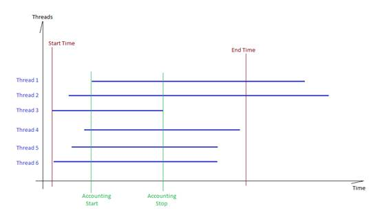

When Mongoose load job starts there's some short delay before the warmup is done and all threads/connections are busy with load tasks. It's expected that the performance rates are lower during this warmup time range. Moreover, at the load job end some threads/connections may remain busy with the load task while other threads/connections are finished already. See the picture below:

The new version introduces the full load threshold (P) which value may be from 0 to 1 (inclusive). Let configured concurrency level be C and current busy connections/threads count be N.
The same as for version 2.3.0
New configuration parameter is "load.metrics.intermediate". Boolean values are acceptable. The default is false. When set to true the intermediate statistics calculation occurs and doesn't occurs otherwise.
New configuration parameter is "load.metrics.threshold". The value should be in the range of [0, 1]. The default is 0.
The intermediate summary statistics output occurs before the total summary statistics output and uses the similiar pattern:
Example:
2016-06-27T18:22:01,292 I LoadExecutorBase mgmtWorker#4 "0-S3-Read-20x1" intermediate: count=(3 ↩ 23/0); duration[us]=(6998447/36142/3029317/6189727/10641453/17274925); latency[us]=(9738/1946/6 ↩ 644/7944/10485/108909); TP[op/s]=(2.713/1.551); BW[MB/s]=(262.083/250.467)
There are a new log file "perf.med.csv" is used to log the intermediate statistics. The layout is the same as for the log file "perf.sum.csv".
Also there are debug messages logged into the "messages.csv" log file for the following events:
2016-06-27T18:20:02,221 | DEBUG | LoadExecutorBase | mgmtWorker#4 | 0-S3-Read-20x1: reached the nominal load: 20
2016-06-27T18:22:01,291 | DEBUG | LoadExecutorBase | mgmtWorker#4 | 0-S3-Read-20x1: nominal load exit